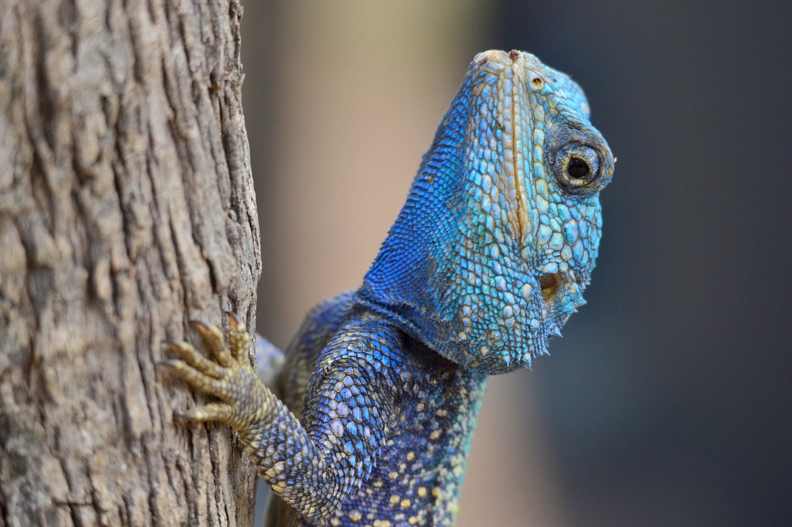

2-Su cola es muy larga y puede representar más de la mitad de su cuerpo.
3-Puede llegar a medir aproximadamente 1 metro de longitud.
4-Tiene garras largas y fuertes que le ayudan a trepar árboles.
5-Usa su lengua para detectar olores y encontrar presas.